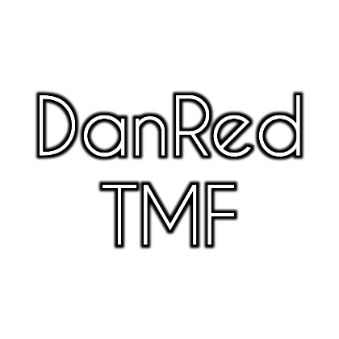

The Mystical Fox
«The Mystical Fox» (или «TMF») — это что-то вроде хобби. Я посвещаю часть свободного времени, занимаясь разработкой одной игры под названием ClickCoin.
Я начал придумывать, а затем и создавать её в конструкторе игр Construct 2, но после создания третьего билда я понял, что этот конструктор не то, что мне нужно.
После недолгого простоя, я решил делать игру на Unity, но это оказалось полным провалом для меня, как начинающего разработчика. Был сделан только один билд. После этого произошло ещё одно неприятное событие — было утеряно всё то, что было связано с игрой, а точнее — мои мысли, что будет в игре и всё в этом духе, изложенные текстом в файле. Произошёл второй, самый долгий простой (три месяца, на тот момент, целое лето)
В момент простоя я не занимался поиском некой "основы" для разработки своей первой игры. Меня потянуло немного иным течением, но как оказалось, тот период был мне необходим для того, чтобы восстановить свои силы и попробовать себя в немного другой, но такой похожей роли.
Python. Буду краток — когда я создал никому не нуженый консольный калькулятор, я радовался. Честно говоря, я создал несколько никому не нужной фигни, но они по крайней мере работают. Да, это было снова хобби. Я просто не могу жить без хобби, постоянно хочется что-то сделать. И ещё скажу, все свои программы я писал на своём смартфоне, а "компилировал" в .exe уже на ПК.
Буквально в начале осени я наткнулся на движок Godot. Меня он сразу заинтересовал, так как раньше слышал про него. Я читал и смотрел. Во мне снова разгорелся знакомый огонь. 21 сентября 2019 года появился первый билд моей игры, сделанный на Godot Engine, а спустя почти месяц (13 октября) вышел уже десятый по счёту билд. Недавно создал страницу игры ClickCoin на сайте GameJolt.
Профиль в GameJolt ClickCoin